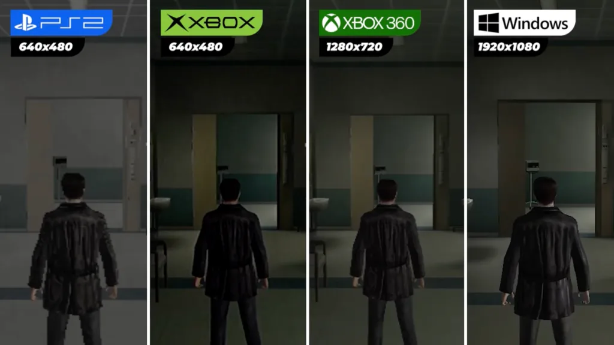

01What I owned
Max Payne 2 was my introduction to Rockstar Games. Coming from film and animation, I wanted to get into the games industry and QA was my way in.
- Hunted down and wrote up bug reports during the finalization of the game
- Tested the console versions, running through each version in multiple languages
- Filed and tracked bugs through the development process
02The console versions
We had to run through all different versions of the game in multiple languages. The PS2 version was particularly rough and many compromises had to be made to get it running on that platform.

Metacritic lists the PC version at 86, the Xbox version at 84 and the PlayStation 2 version at 73.
03What I learned
This was a brief but formative role where I learned the fundamentals of game testing and bug reporting. It gave me insight into how AAA games are polished and shipped. Working on Max Payne 2's console versions taught me the importance of attention to detail and thorough testing, skills that would serve me throughout my design career.
More importantly, it was the start of my journey at Rockstar, leading directly to becoming a game designer on Bully.